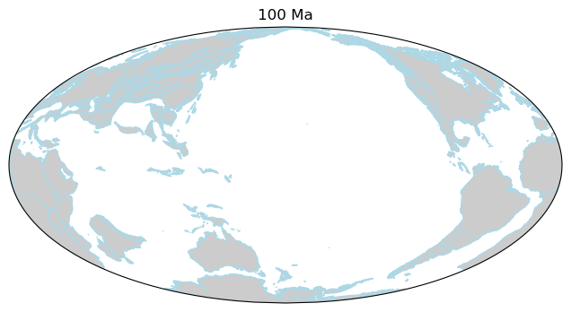

Minimal working example
Follow the steps below to create your own first paleogeographic map.
Note
You need to know how to use a terminal to follow the instructions below.
Option 1: Python script
Step 1: use micromamba to create a GPlately environment
$ micromamba create -n my-gplately-env $ micromamba activate my-gplately-env $ micromamba install -c conda-forge gplately
See also
Step 2: create a gplately_hello_world.py file and copy & paste the Python code below
1import cartopy.crs as ccrs 2import matplotlib.pyplot as plt 3 4import gplately 5 6# create a basemap using Mollweide projection 7ax = plt.figure(figsize=(8, 4)).add_subplot(111, projection=ccrs.Mollweide(180)) 8 9# get a PlotTopologies object 10gplot = gplately.auxiliary.get_gplot("Muller2019", time=100) 11 12# use the PlotTopologies object to plot a paleo-coastlines map 13gplot.plot_coastlines(ax, color="lightblue",facecolor="0.8") 14 15# add title for the map 16plt.title(f"{int(gplot.time)} Ma") 17 18# save the map to a .png file 19plt.gcf().savefig("gplately-hello-world.png")
Step 3: run the Python file and check the map
$ python3 gplately_hello_world.py
Open the file
gplately-hello-world.pngin your current working directory. The paleogeographic map created by the code above shows the coastlines at 100 Million years ago.
{kind=link}
Option 2: Jupyter Notebook
Step 1: use micromamba to create a GPlately environment
$ micromamba create -n my-gplately-env $ micromamba activate my-gplately-env $ micromamba install -c conda-forge gplately jupyter
See also
Step 2: start a Jupyter Notebook server
$ jupyter notebook
See also
Step 3: create an empty notebook and copy & paste the Python code below
1import cartopy.crs as ccrs 2import matplotlib.pyplot as plt 3 4import gplately 5 6# create a basemap using Mollweide projection 7ax = plt.figure(figsize=(8, 4)).add_subplot(111, projection=ccrs.Mollweide(180)) 8 9# get a PlotTopologies object 10gplot = gplately.auxiliary.get_gplot("Muller2019", time=100) 11 12# use the PlotTopologies object to plot a paleo-coastlines map 13gplot.plot_coastlines(ax, color="lightblue",facecolor="0.8") 14 15# add title for the map 16plt.title(f"{int(gplot.time)} Ma") 17 18# display the map 19plt.show()
Step 4: run the notebook and check the map